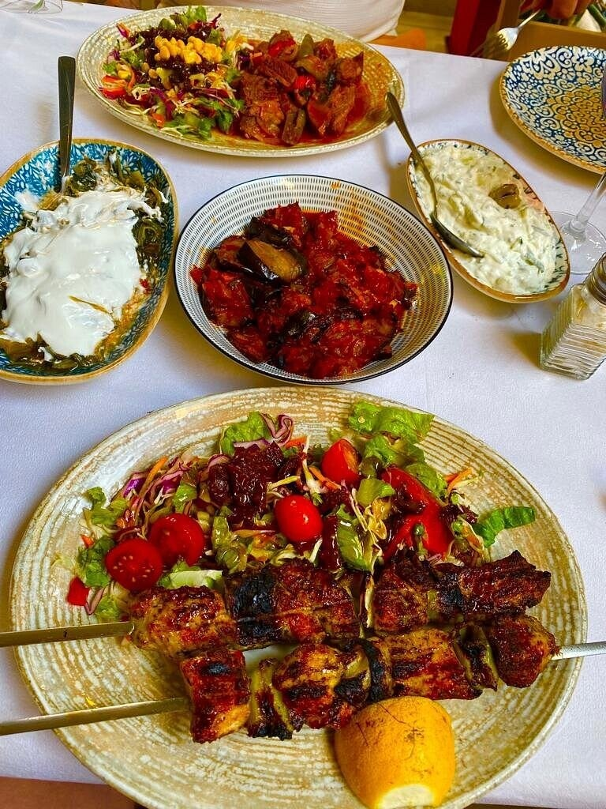
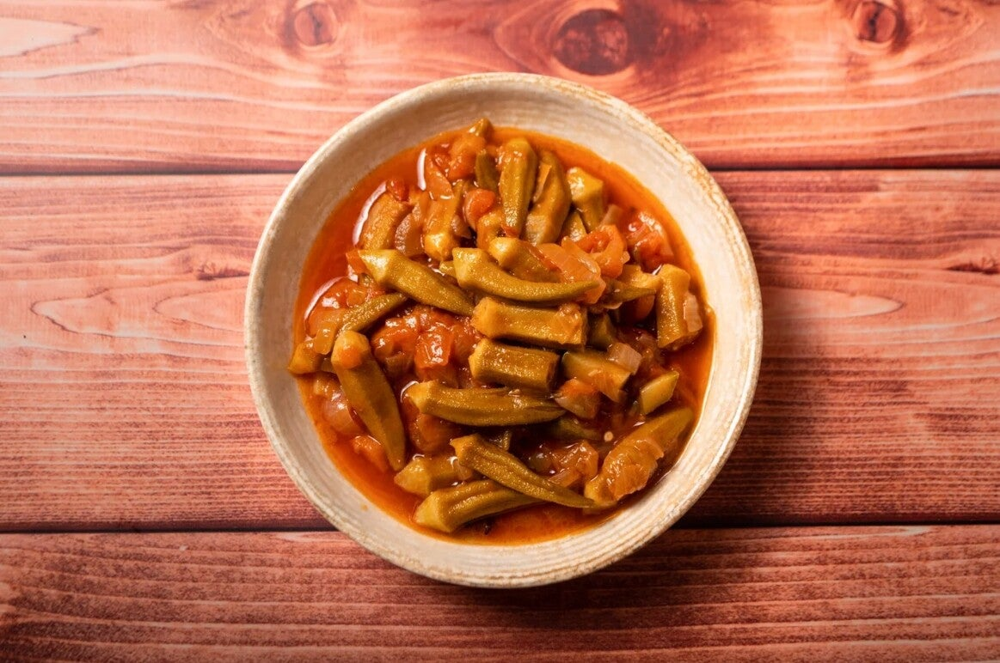
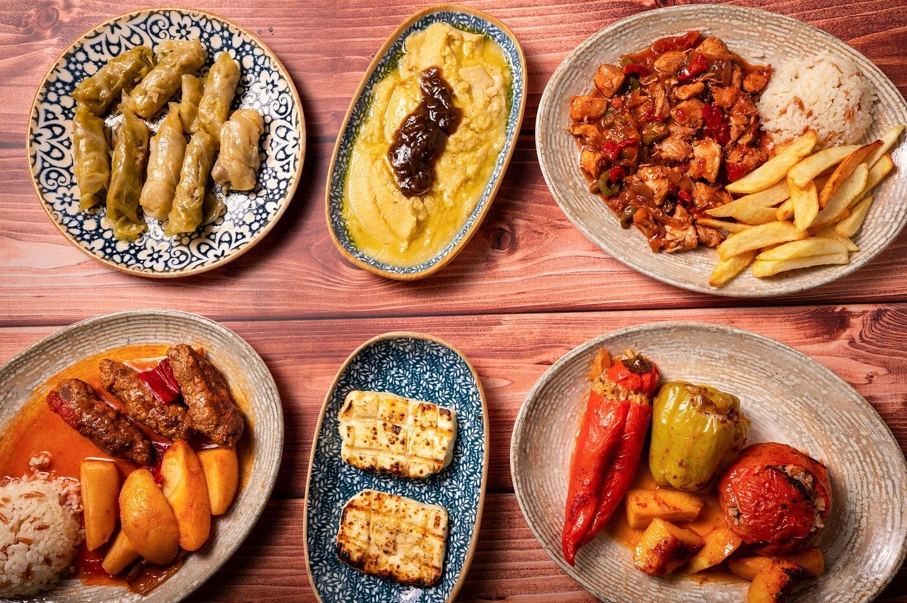
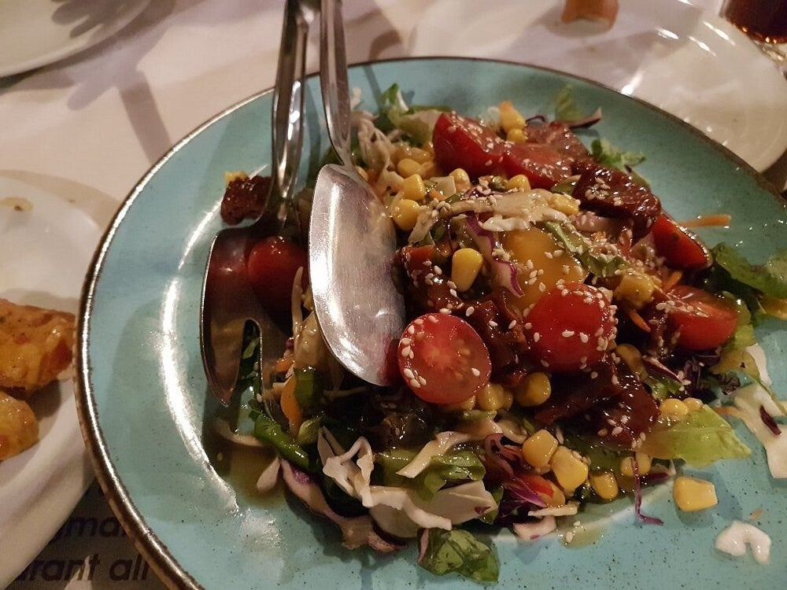

Kos-stad
Grieks-Turks · sinds 1986
Over dit restaurant
Ali is een echt familiebedrijf in Kos-stad, op loopafstand van de haven. Sinds 1986, opgericht door de familie Hatzisouleiman.

Sfeer & eten
Traditionele Griekse én Turkse gerechten: manti, adana kebab, octopus, gegrild vlees. Er zijn ook vegetarische en vegan opties. De sfeer is warm en gastvrij – meer thuis dan hotelrestaurant.


Praktisch
Handig gelegen richting de haven. Geschikt voor lunch of diner.


